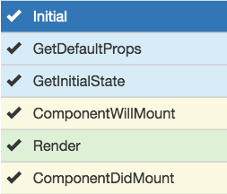
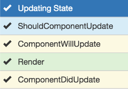
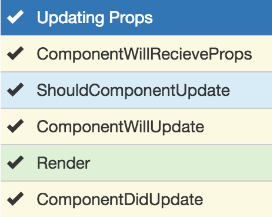
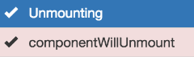

KISS - Keep It Simple, stupid
working with JavaScript, forget the DOM
working with JavaScript, forget the DOM
JavaScript + Lifecycle
React - Lifecycle
- Initialization
- State Changes
- Props Changes
- Unmounting
React - Lifecycle - Initialization

React - Lifecycle - State Changes

React - Lifecycle - Props Changes

React - Lifecycle - Unmounting

THE END
Created by Adriano Patrick Cunha